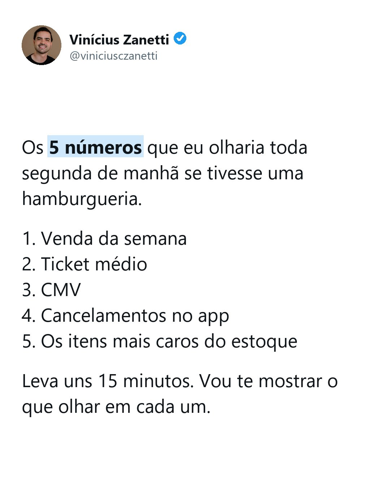

15 minutos na segunda: os 5 números que mostram onde o dinheiro da hamburgueria escapa
Faturamento conta quanto entrou. Venda da semana, ticket médio, CMV, cancelamentos e os itens mais caros do estoque contam por que sobrou ou não sobrou. O roteiro de Vinícius Zanetti para ler cada um antes de o mês fechar.
Publicado em 16/11/2026
O dono de restaurante costuma descobrir o problema do mês quando o mês já acabou. O fechamento chega, o resultado decepciona e não dá mais para corrigir nada. A alternativa é olhar menos números, com mais frequência.
Num carrossel publicado no Instagram em 11 de novembro, o consultor Vinícius Zanetti listou os 5 números que olharia toda segunda de manhã, antes de abrir, se tivesse uma hamburgueria: venda da semana, ticket médio, CMV, cancelamentos no app e os itens mais caros do estoque. Segundo ele, leva uns 15 minutos.

"Faturamento te conta quanto entrou. Esses 5 números te contam por que sobrou ou não sobrou."Vinícius Zanetti, no carrossel sobre os 5 números da segunda-feira
A lista curta não é por acaso. No livro Restaurante no Controle, Vinícius cita a recomendação dos pesquisadores Sousa e Richa de que um gestor monitore de cinco a nove indicadores ao mesmo tempo. Mais do que isso, ninguém acompanha. Menos, e algo importante passa batido.
Os números abaixo são os do carrossel, de uma hamburgueria de exemplo. Servem para mostrar o que olhar. A conta de verdade é com os números do seu restaurante.
1. Como comparar a venda da semana?
Venda da semana: R$ 38.400
Neste exemplo, 6,8% abaixo da mesma semana do mês passado.
A regra do carrossel é comparar com a mesma semana do mês passado, não com a semana anterior. Feriado e dia de pagamento bagunçam a comparação entre semanas vizinhas.
"Caiu duas semanas seguidas? Aí não é acaso, é sinal."Vinícius Zanetti, no carrossel sobre os 5 números da segunda-feira
2. Como calcular o ticket médio do restaurante?
Ticket médio: R$ 40,00
Neste exemplo, era R$ 43,50 no mês passado.
Ticket médio é a venda dividida pelo número de pedidos. É a mesma definição usada em artigo da Comunidade Sebrae PR: o valor das vendas totais dividido pelo número de vendas. Neste exemplo, R$ 38.400 divididos por 960 pedidos dão R$ 40,00.
O número importa porque mostra a natureza do crescimento. O livro faz a pergunta que o dono deve se fazer: o restaurante atendeu mais clientes, ou os clientes gastaram mais? Para o carrossel, quando o número de pedidos sobe e o ticket cai, o suspeito é conhecido.
"Pedido subindo e ticket caindo quase sempre é promoção ou combo comendo o valor de cada venda."Vinícius Zanetti, no carrossel sobre os 5 números da segunda-feira
O blog contou um caso desse tipo, de um cliente da Zatti no delivery, na matéria Cupom no delivery: por que derruba o ticket médio.
3. Dá para calcular o CMV toda semana?
CMV da semana: 36%
Neste exemplo, acima da faixa saudável de 25% a 33%.
Dá, com a mesma fórmula do mês: estoque do começo da semana mais compras, menos estoque do fim da semana, dividido pela venda. O livro inclui o acompanhamento do CMV parcial da semana entre as rotinas semanais de gestão. O ponto central é não confundir CMV com compras.
"CMV é o que saiu do estoque, não o que você comprou."Vinícius Zanetti, no carrossel sobre os 5 números da segunda-feira
Passou de 33%? A orientação do carrossel é conferir porção, desperdício e preço do fornecedor antes de mexer no cardápio. Aumentar o preço para cobrir uma porção que está saindo maior que a ficha técnica só esconde o problema. A diferença entre CMV e compras está explicada em CMV não é compras do mês.
4. Por que olhar os pedidos cancelados no app?
Pedidos cancelados: 18
Neste exemplo, R$ 720 que voltaram para o cliente.
Pedido cancelado é o pior dos mundos, segundo o carrossel: o insumo já foi gasto e o dinheiro volta. Neste exemplo, os 18 cancelamentos da semana somam R$ 720, o equivalente a 18 pedidos de ticket médio.
Olhar só o total, porém, não resolve. O que interessa é o motivo de cada cancelamento: atraso, item em falta, pedido errado, endereço fora da área.
"Se o mesmo motivo se repete, é processo, não azar."Vinícius Zanetti, no carrossel sobre os 5 números da segunda-feira
Quando o motivo se repete, ele vira pauta da reunião da semana. O método para tratar o erro sem caçar culpado está em O erro mais caro da semana no restaurante.
5. Como conferir o estoque sem contar tudo?
Carne: sistema x câmara: 5 kg a menos
Neste exemplo, 5 kg a R$ 45 o quilo: R$ 225 numa semana.
O inventário completo fica para o fim do mês. Na segunda, a sugestão é contar só os 3 itens mais caros, como carne, queijo e bacon, e comparar com o que o sistema diz que deveria haver.
"A diferença entre o que o sistema diz e o que está na câmara é dinheiro que sumiu."Vinícius Zanetti, no carrossel sobre os 5 números da segunda-feira
É a versão rápida de uma comparação que o livro descreve no capítulo Acompanha: o CMV teórico, o que deveria ter sido gasto segundo as fichas técnicas, contra o CMV real. Quando os dois se afastam, há perda, desperdício ou desvio a investigar. Neste exemplo, R$ 225 numa semana são cerca de R$ 900 num mês de quatro semanas, só num item.
O que fazer quando um número sai do normal?
O livro descreve a postura com exemplos parecidos com os do carrossel. O CMV subiu dois pontos percentuais: o empresário investiga antes de esperar o problema se agravar. O ticket médio do delivery caiu nas últimas três semanas: ele analisa se houve mudança no mix de pedidos ou na efetividade das campanhas. A regra é a mesma nos cinco números: o dado só vale se mudar a decisão.
| Número | Sinal de alerta | Onde olhar primeiro |
|---|---|---|
| Venda da semana | Queda em duas semanas seguidas | Canal e dia da semana que caíram |
| Ticket médio | Pedidos sobem e ticket cai | Promoções e combos |
| CMV | Acima de 33% | Porção, desperdício, preço do fornecedor |
| Cancelamentos | Mesmo motivo repetido | Processo que gerou o motivo |
| Itens caros do estoque | Câmara abaixo do sistema | Porcionamento, perda e conferência |
O que o dono de hamburgueria e pizzaria faz com isso
- Marque 15 minutos fixos na segunda, antes de abrir. Mesmo horário toda semana.
- Monte uma folha com os 5 números. Uma linha por semana, para enxergar a tendência e não só o número solto.
- Conte os 3 itens mais caros no domingo à noite ou na segunda cedo. Na hamburgueria, carne, queijo e bacon. Na pizzaria, os 3 itens de maior custo na sua ficha técnica.
- Escolha uma ação por semana. O número que mais saiu do normal ganha uma ação e um responsável.
Perguntas frequentes
Quais indicadores um restaurante deve acompanhar toda semana?
Vinícius Zanetti sugere 5: venda da semana, ticket médio, CMV, cancelamentos no aplicativo e a contagem dos itens mais caros do estoque. A leitura leva cerca de 15 minutos.
Como calcular o ticket médio de um restaurante?
Divida a venda do período pelo número de pedidos. Com R$ 38.400 de venda e 960 pedidos na semana, o ticket médio é de R$ 40,00.
Com o que comparar a venda da semana?
Com a mesma semana do mês passado, e não com a semana anterior, porque feriados e datas de pagamento distorcem a comparação entre semanas vizinhas.
Preciso contar todo o estoque toda semana?
Não. A sugestão é contar só os 3 itens mais caros, como carne, queijo e bacon, e comparar com o que o sistema indica. O inventário completo fica para o fim do mês.
Fontes
- Vinícius Zanetti no Instagram: carrossel sobre os 5 números da segunda-feira (11/11/2026).
- Vinícius Zanetti, Restaurante no Controle: capítulos Garante (rotinas semanais) e Acompanha (indicadores, ticket médio e CMV teórico x real).
- Comunidade Sebrae PR: Ticket médio: como aumentar o meu faturamento sem aumentar o número de clientes (18/06/2020).